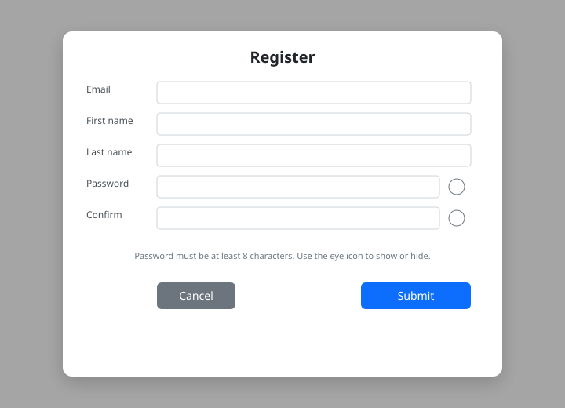
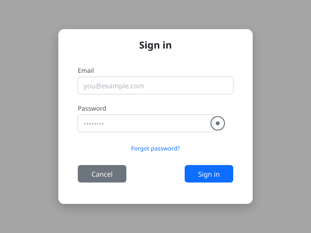
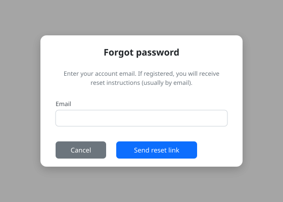
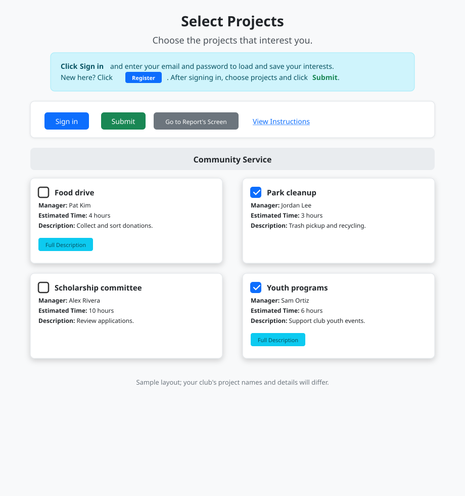
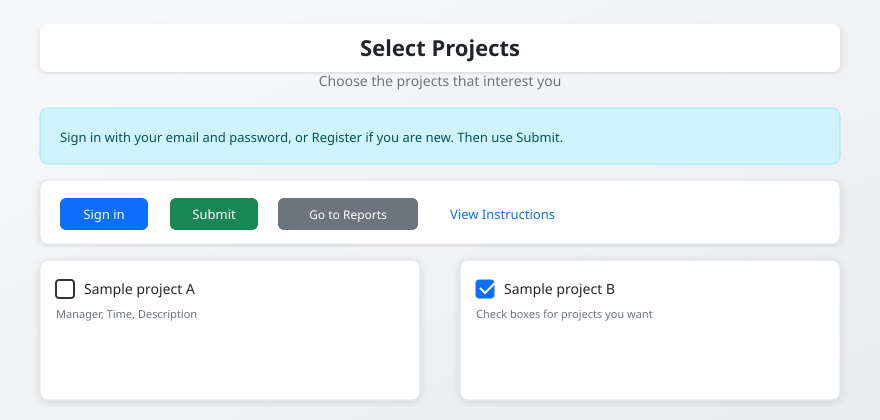
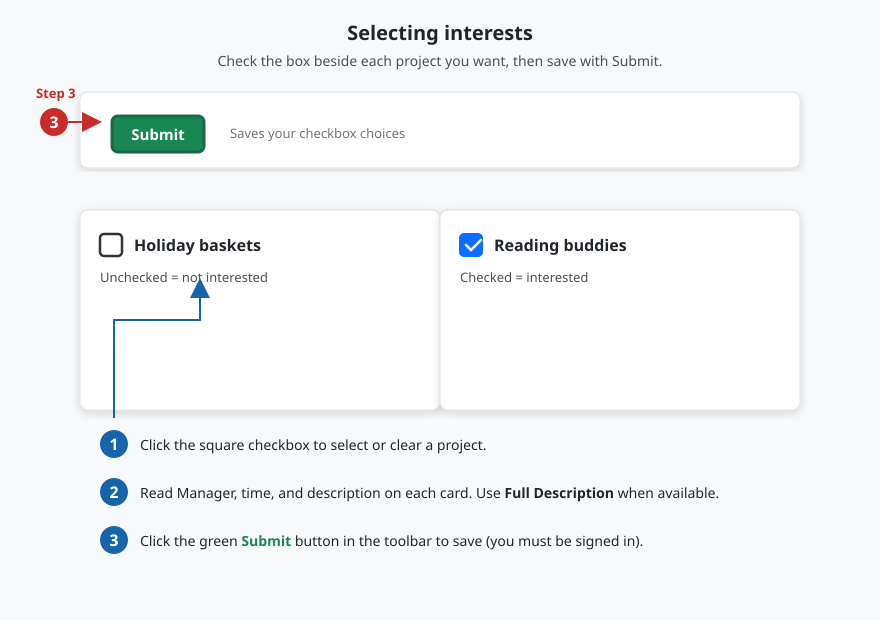
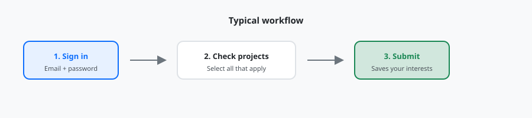
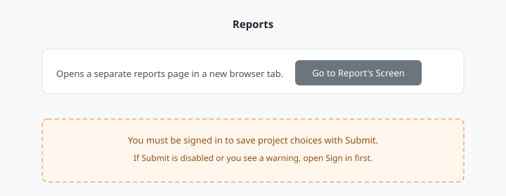

How to use Project Interests
New members start by creating an account, then sign in to load and save project interests. This page follows that order, then explains the main screen, how to select projects, and where to open reports.
Create an account
- Click Register in the toolbar (or the Register button in the blue info strip on the main page).
- Fill in first name, last name, email, and password (and confirm password).
- Use the eye icons to show or hide passwords if needed.
- Submit the form. You can then sign in with that email and password.

Sign in
- Click Sign in in the toolbar.
- Enter the email and password you used when you registered.
- Use the eye icon in the password field if you want to show or hide what you typed.
- Click Sign in in the dialog. Click Cancel to close without signing in.
After a successful sign-in, the page reloads and your saved project interests load into the checkboxes.

Forgot password
- Open Sign in, then click Forgot password?
- Enter your account email and submit. If an account exists, a reset message is sent to that address.
- Open the link in the email and choose a new password.
Your club’s server must be configured to send email for the message to arrive. If you are testing on your own computer, your administrator may provide a local reset link instead.

What you see on the main page
The main screen lists available projects as checkboxes on cards, often grouped by category headers (dividers). The blue info strip explains that you should Sign in (or use Register in that strip) before saving. The white toolbar has Sign in, the green Submit button, Go to Report's Screen, and View Instructions. After you sign in, the toolbar shows who is signed in and a Sign out link instead of Sign in. You must be signed in before your checkbox choices can be saved. If you have previously selected projects, those boxes will be checked when you sign in and load the page. You can then adjust your choices and click Submit to update your saved interests.


Select projects
On the main interests page, browse the project cards. Category dividers group related projects when your club sets them up that way. When you are ready to record what you want, follow these steps:
- Sign in so the site knows which member record to update.
- Check the boxes for projects you are interested in; uncheck any you no longer want.
- Click Submit to save. Wait for the confirmation message.
The Checkboxes and Submit section next shows those controls in a picture.
Checkboxes and Submit
Each project appears on a card with a square checkbox on the left of the project name. Click the box to mark interest (checked) or clear it (unchecked). When you are done, click the green Submit button in the toolbar to write your choices to the database.

If Submit seems to do nothing, confirm you are signed in and watch for a confirmation popup after saving.
Workflow
This is the same sequence as Select projects above, shown as a quick visual summary. See the checkboxes and Submit section for a labeled picture of the controls.

Reports
Click Go to Report's Screen in the toolbar to open project reporting in a new browser tab or window (depending on your browser). Use that area for summaries your club has set up; it is separate from checking boxes on the interests page.
